General
如何設定物件(Node)的 tag及取得物件
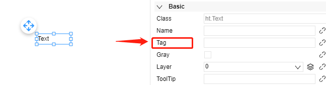在物件屬性中進行設定 Tag. 若設定為 tag_name.
dataModel.getDataByTag('tag_name')
取得 Node data 的方式除了透過 tag 之外，在事件傳入的 "data"，也可直接獲取當前 Node Data。
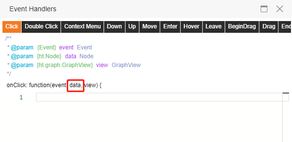如何取的GraphView物件
In 2D page (display.html) : graphView
In 3D page (scene.html) : g3d
In Overlay page (sceneAndDisplay.html) : graphView or g3d
Or
commonViewUtil.getFileObjByFileName(dataRefreshUtil.currentFile).graphView
或是在每個事件 function 中傳入的 gv、view
使用疊加層時盡量使用事件函數傳入的 graphview.
如何取的圖紙、場景dataModel
In 2D page (display.html) : dataModel
In 3D page (scene.html) : dataModel
In Overlay page (sceneAndDisplay.html) : dataModel
Or
commonViewUtil.getFileObjByFileName(dataRefreshUtil.currentFile).dataModel
或是在每個事件 function 中傳入的 dm
或是從 graphview 物件下使用 graphview.dm()
使用疊加層時盡量使用事件函數傳入的 graphview 或是 dm.
物件屬性改值
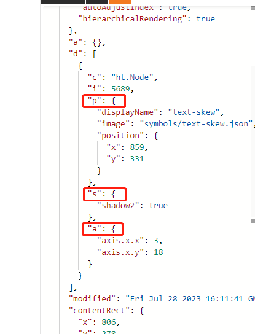
可透過 dataModel.getDataByTag('tag_name') 取得物件，物件屬姓分為 property(p), style(s), attribute(a)，
使用以下取的當前值：
dataModel.getDataByTag('tagName').s('style_name')
dataModel.getDataByTag('tagName').a('attribute_name')
dataModel.getDataByTag('tagName')[ht.Default.getter('property_name')]();
使用以下設定當前值：
dataModel.getDataByTag('tagName').s('style_name', value)
dataModel.getDataByTag('tagName').a('attribute_name', value)
dataModel.getDataByTag('tagName')[ht.Default.getter('property_name')](value);
物件(圖標)動態添加
// 添加文字
var d = new ht.Text()
d.s('text','AAA')
dataModel.add(d)
// 添加圖標
var node = new ht.Node();
node.setImage('symbols/builtIn/fan/fan3.json'); // 加入圖標路徑
node.p({x:200,y:200})
dataModel.add(da)
物件動態添加事件
node.s({
'interactive': true,
'onClick': function(event, data, view) {
}
})
SVG顯示錯誤
SVG 中的內容如果不是向量圖形，而是 `image` 這種多png組成的， 在添加入HT編輯器時可能會出現無法顯示，進入到瀏覽模式時會看不見這張 svg。 此時請直接使用 png 進行貼圖。
<svg xmlns="http://www.w3.org/2000/svg" xmlns:xlink="http://www.w3.org/1999/xlink" width="997" height="1217" viewBox="0 0 997 1217">
<image id="图层_2" data-name="图层 2" x="111" y="62" width="742" height="1088" xlink:href="data:img/png;base64"/>
</svg>
導出匯出場景、圖紙時，失敗
1. 如果只有特定圖紙無法匯出，可能是圖紙上物件中含有亂碼造成無法解析，請找出並移除該物件。
2. 如果是所有圖紙均無法匯出，可能是部屬空間資源不足。需要請平台調整部屬資源。
元素屬性變化事件監聽器
dataModel.md(function(event) {
//event格式：
{
property: "name",//发生变化的属性
data: data,//属性发生变化的data
oldValue: 0,//旧值
newValue: 1//新值
}
});
Viewer 數據綁定相關資訊，含request、response
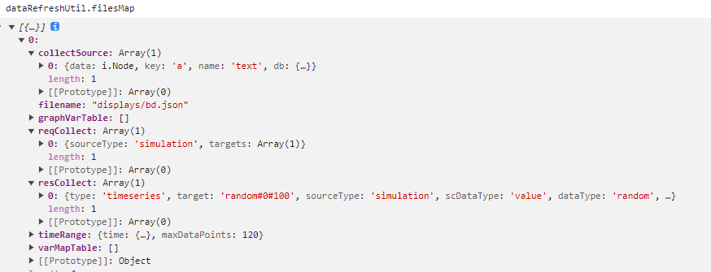
// 使用已下可讀取到當前所有開啟過的圖紙數據綁定設定
dataRefreshUtil.filesMap
// 對應當前圖紙名稱
dataRefreshUtil.currentFile
// 收集所有數據綁定對照(上圖中)
collectSource
// 發送取值前request整理(上圖中)
reqCollect
// 數據回應的response儲存(上圖中)
resCollect
HTML DOM元素和 canvas上的繪制圖形是兩個不同的層，它們無法交錯層疊。
HTML DOM（文檔對象模型）元素是網頁中的HTML元素，如文本、圖像、按鈕等， 它們是由HTML代碼創建的並且可以通過CSS樣式進行布局和樣式化。而 <canvas> 元素是一個HTML5提供的元素， 它是一個繪圖區域，可以通過JavaScript繪制2D圖形、圖像和動畫。 簡而言之，HTML DOM元素和<canvas>上的繪制圖形是兩個不同的層， 它們無法交錯層疊。具體原因是因為HTML DOM元素是由HTML代碼創建並渲染的， 它們是瀏覽器的文檔對象的一部分。而<canvas>元素是一個特殊的繪圖區域， 它是通過JavaScript繪制的，繪制的內容與HTML文檔無關，也無法直接與HTML DOM元素進行交互。 如果想要在<canvas>上繪制與HTML DOM元素交互的圖形，可以使用JavaScript繪制的方法， 例如使用繪制庫（如Canvas API）來實現繪圖效果，並通過JavaScript來響應用戶交互。但是， 繪制在<canvas>上的圖形不會影響到HTML DOM元素，它們仍然是分開的兩個層級，無法直接交錯疊加。 因此，如果想要在頁面中同時使用HTML DOM元素和<canvas>繪制圖形， 需要將它們分別放置在不同的位置，並理解它們是兩個獨立的層，無法直接交錯疊加。
腳本語法僅支持：javascript
頁面完全使用標準html, javascript語法，依瀏覽器支援進行渲染。
所有的開發技術請參考Javascript前端網頁進行學習。
透過生成json產生圖紙及數據綁訂
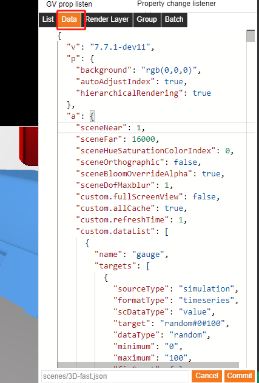
可將相關物件配置完成後，複製右下角的數據進行查看各屬性資訊。
依json格式生成新的json即可。
使用api上傳可以呼叫 "POST /upload"
Body:
{
path: scenes/****.json,
content: { **數據json** }
}
注意需要登入"POST /api/login"後取得token才能呼叫驗證成功
{
"password": "******",
"username": "******"
}
資料綁定 Set Match，設定顏色不要用Direct feed
Direct feed 的功能是為了快速處理 0,1 與 true, false 對應使用
0 => false
1 => true
勾選 direct feed 則不需額外配置 true, false
不同 view HTML 頁面功能對應
| HTML | 功能 | 說明 |
|---|---|---|
| display.html | 2D 顯示 | 2D 預設預覽 |
| scene.html | 3D 顯示 | 3D 預設預覽 |
| sceneAndDisplay.html | 2D & 3D 疊加層顯示 | 預設預覽、選單開啟疊加層 |
| view.html | 2D 或 3D 顯示 | 選單預設，未開啟疊加層 |
非數值型屬性綁定數據或動態填資料
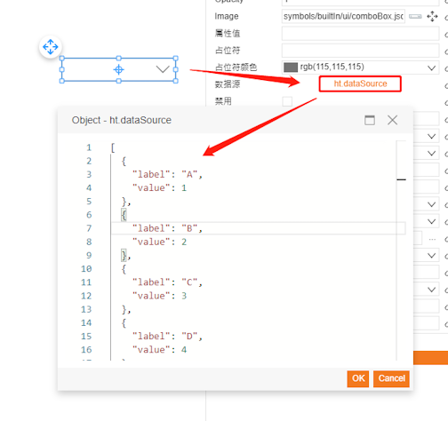
以下拉選單為例，需要的格式是 (label, value) 陣列資料。
可透過 script 動態填入相同格式的 json，達到動態換資料。
即可透過 fetch, XMLHttpRequest 等方式動態改動下拉選單內容
data.a('ht.dataSource', [
{ 'label': 'tag 1', value: 'tag_name_1' },
{ 'label': 'tag 2', value: 'tag_name_2' }
])
不支持變量的數據源動態切換綁訂數據
1. 在 Userdefined 的數據綁定中，預先定義可能會使用到被切換的數據，以便在取值時會預先讀取。
2. 在綁定的數據的彈窗屬性裡修改"id"，在標簽頁 Information > id。本例中修改為 test_change
3. 修改物件綁定的數據物件：
dataRefreshUtil.filesMap.forEach((item) => {
if (dataRefreshUtil.currentFile === item.filename) {
item.collectSource.forEach((obj) => {
if (obj.db.id === 'test_change') {
if (obj.db.targets[0].target === 'upper_0') {
obj.db.targets[0] = {sourceType: 'SimpleJson', formatType: 'timeseries', scDataType: 'value', target: 'upper_1'};
} else {
obj.db.targets[0] = {sourceType: 'SimpleJson', formatType: 'timeseries', scDataType: 'value', target: 'upper_0'};
}
console.log(obj.db.id, obj.db.targets[0].target)
}
})
}
})
修改 dataRefreshUtil.filesMap 中的 collectSource，找到對應物件的 ***target*** 並進行修改。
注意：不同數據源的 targets 物件格式可能不同，請依照個數據源參數進行改寫。
target物件中的必要欄位：
- sourceType
- formatType
- scDataType
- target
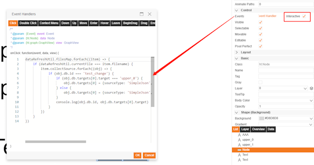
數據源的 datasourcetype 取得

在 Data source 列表中，點擊 "i" 會自動複製 datasourcetype。
這個名稱是數據源唯一識別 "id" 。
※ datasourceName 則是用戶自定義的名稱
Assets目錄支援格式
媒體類型：
- png
- gif
- jpg
- jpeg
- svg
- mp3
- mp4
- dxf
- obj
- mtl
- 3ds
- bin
- fbx
- hdr
- gltf
- glb
文字類型：
- json
- cob
- htb
- js
- css
- html
- htm
頁面過場、轉場特效
此功能僅適用於 `3D & 2D 疊加層` 預覽介面.
commonViewUtil.sceneTransitionInOutAnimated(currentFileName, newFileName, option)
- currentFileName: 當前檔案路徑 (ex. `displays/Acid Exhaust Fan and Scrubber 2.json`)
- newFileName: 轉頁的檔案路徑 (ex. `displays/SpongFactory.json`)
- option: 包含三個方法. (beforeAnimate, onUpdate, onEnd)
- beforeAnimate(tempOutDiv, tempDiv)
- onUpdate(tempOutDiv, tempDiv, idx)
- onEnd()
- tempOutDiv: 當前頁面的 `< div >` 區塊
- tempDiv: 新頁面的 `< div >` 區塊
- idx: 從 1 降到 0 的數字, 做動畫變換計算功能.
右方推入
commonViewUtil.sceneTransitionInOutAnimated('displays/Acid Exhaust Fan and Scrubber.json', 'displays/SpongFactory.json')
客製化樣式範例
旋轉縮小、放大
commonViewUtil.sceneTransitionInOutAnimated(
'displays/SpongFactory.json',
'scenes/building.json',
{
beforeAnimate: function(tempOutDiv, tempDiv){
tempOutDiv.style.transform = 'scale(1,1) rotateZ(0deg)';
tempDiv.style.transform = 'scale(0,0) rotateZ(360deg)';
},
onUpdate: function(tempOutDiv, tempDiv, idx){
const reversIdx = (1 - idx)
const revers = 360 * (1 - idx)
const rotate = 360 * idx;
const scale = 1 * reversIdx * reversIdx;
if (idx >= 0.5) {
const s1 = (idx * 2 - 1)
const r1 = 360 * (1 - idx)
tempOutDiv.style.transform = 'scale('+s1+','+s1+') rotateZ('+r1+'deg)';
tempDiv.style.transform = 'scale(0,0) rotateZ(360deg)';
}
if (idx <= 0.5) {
const s2 = (reversIdx * 2 - 1)
const r2 = 360 * (1 - reversIdx)
tempOutDiv.style.transform = 'scale(0,0) rotateZ(360deg)';
tempDiv.style.transform = 'scale('+s2+','+s2+') rotateZ('+r2+'deg)';
}
}
}
)
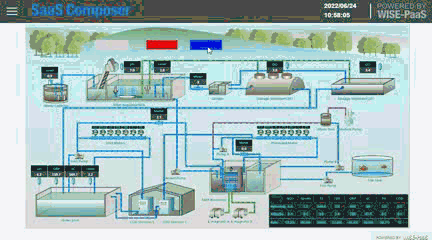淡出淡入 使用 CSS opacity
commonViewUtil.sceneTransitionInOutAnimated('scenes/building.json', 'displays/Acid Exhaust Fan and Scrubber 2.json', {
beforeAnimate: function(tempOutDiv, tempDiv){
tempOutDiv.style.opacity = 1;
tempDiv.style.opacity = 0;
},
onUpdate: function(tempOutDiv, tempDiv, idx){
if (idx >= 0.5) {
tempOutDiv.style.opacity = 2 * idx - 1;
tempDiv.style.opacity = 0;
}
if (idx <= 0.5) {
tempOutDiv.style.opacity = 0;
tempDiv.style.opacity = 2*(1-idx) - 1;
}
}
})
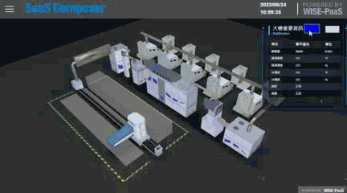2D
2D map、video 等，與繪制圖形是兩個不同的層，它們無法交錯層疊。
HTML DOM （文檔對象模型）元素是網頁中的 HTML 元素，如文本、圖像、按鈕等，
它們是由 HTML 代碼創建的並且可以通過CSS樣式進行布局和樣式化。而 <canvas> 元素是一個 HTML5 提供的元素，
它是一個繪圖區域，可以通過 JavaScript 繪制 2D 圖形、圖像和動畫。
簡而言之， HTML DOM 元素和 <canvas> 上的繪制圖形是兩個不同的層，
它們無法交錯層疊。具體原因是因為 HTML DOM 元素是由 HTML 代碼創建並渲染的，
它們是瀏覽器的文檔對象的一部分。而 <canvas> 元素是一個特殊的繪圖區域，
它是通過 JavaScript 繪制的，繪制的內容與 HTML 文檔無關，也無法直接與 HTML DOM 元素進行交互。
如果想要在 <canvas> 上繪制與 HTML DOM 元素交互的圖形，可以使用 JavaScript 繪制的方法，
例如使用繪制庫（ 如Canvas API ）來實現繪圖效果，並通過 JavaScript 來響應用戶交互。但是，
繪制在 <canvas> 上的圖形不會影響到 HTML DOM 元素，它們仍然是分開的兩個層級，無法直接交錯疊加。
因此，如果想要在頁面中同時使用 HTML DOM 元素和 <canvas> 繪制圖形，
需要將它們分別放置在不同的位置，並理解它們是兩個獨立的層，無法直接交錯疊加。
2D 事件無法觸發
點擊事件或其他事件無法被觸發，請確認物件是否有啟用。可交互(interactive)。
如果只是針對單一事件無法觸發，請透過瀏覽器開發者工具確認是否有語法撰寫錯誤情況發生。
2D 整合Echart第三方擴充套件
第三方圖形可以參考: Echart Demo
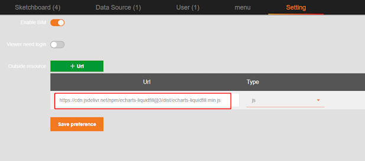
在設定頁引入第三方套件。
https://cdn.jsdelivr.net/npm/echarts-liquidfill@3/dist/echarts-liquidfill.min.js
新建圖標，並且在Render HTML撰寫相關引用 Echart 的代碼，及設定可數據綁定的參數
在圖指引用之後即可在預覽時呈現。
需要注意 Echart 是使用獨立的 HTML 元件，不可與繪製的圖進行交錯排列。
let value = data.a('value');
if (value > 1) {
value = (value % 100) / 100;
} else if (value < 0) {
value = 0
}
var option = {
backgroundColor: '#fff',
title: {
left: 'center',
bottom: 20,
text: '申请方',
textStyle: {
fontWeight: 'bold',
fontSize: 25,
color: '#333'
},
subtext: '满意度',
subtextStyle: {
color: '#333'
}
},
series: [
{
type: "liquidFill",
name: '申请方',
radius: "85%",
center: ['50%', '45%'],
shape: "path://M657.462,490.835c-21.359-45.771-82.071-35.092-82.471,18.032-0.221,29.177,28.91,40.083,48.306,51.747,18.807,11.312,32.193,26.786,34.291,33.373,1.8-6.454,16.705-22.366,34.115-33.689,19.036-12.382,48.527-22.572,48.306-51.748C739.607,455.294,677.839,446.889,657.462,490.835Z",
data: [value, value, value], //datat
color: ['#fc8b8b'],
outline: {
show: false,
},
backgroundStyle: {
color: '#edd4d4',
borderColor: "#fff",
borderWidth: 1,
shadowColor: "rgba(0, 0, 0, 0.4)",
shadowBlur: 0,
},
label: {
normal: {
position: ["50%", "40%"],
formatter: () => {
return Math.round(value * 100) + '%'
},
textStyle: {
fontSize: 30,
},
},
},
},
],
};
if (!cache.htmlView) {
cache.htmlView = document.createElement('div');
cache.htmlView.style.position = 'absolute';
cache.htmlChart = echarts.init(cache.htmlView);
// layoutHTML will be called when the data needs to be drawing
cache.htmlView.layoutHTML = function() {
gv.layoutHTML(data, cache.htmlView, false);
cache.htmlChart.resize();
};
}
// update data
option.color = [data.a('lineColor1'), data.a('lineColor2')];
option.textStyle = { color: data.a('textColor') };
cache.htmlChart.setOption(option);
// html for showing
return cache.htmlView;
2D webrtc 影像接入
可使用以下內建套件
1. 動態引入 /custom/libs/rision.js
2. 先建圖標
3. 添加 videoURL屬性
4. webrtc://172.xx.x.xx:xxxx/xxxxx/xxxx
let videoURL = data.a('videoURL');
var script = document.createElement("script");
script.setAttribute("src", "/custom/libs/rision.js");
document.getElementsByTagName('head')[0].appendChild(script);
if (!cache.htmlView) {
var video = cache.htmlView = document.createElement('video');
video.setAttribute("controls", "controls")
video.layoutHTML = function () {
gv.layoutHTML(data, video);
};
};
var r = commonUtil.getParamFromURL('org_id');
setTimeout(() => {
const video = document.getElementsByTagName('video')[0];
video.autoplay = true;
video.muted = true;
video.crossOrigin = 'anonymous';
const risions = window.rison;
let sdk = risions.SrsRtcPlayerAsync();
if (video && videoURL) {
video.srcObject = sdk.stream;
sdk
.play(videoURL)
.then(function (session) {
console.log('🚀 ~ session:', session.code);
})
.catch(function (reason) {
console.log('🚀 ~ reason:', reason);
sdk.close();
});
}
}, 500)
return cache.htmlView;
3D
圖紙步進距離設定
g3d.setMoveStep(number)
g3d.getMoveStep()
3D 貼皮重複 UV
要正確貼皮，圖片大小有限制， 贴图大小要是2的n次方，如: 128 * 256 = 27*28
3D 場景優化
場景可以從以下幾個方面優化：
1、讓設計師輕量化模型，對模型進行減面，不必要的細節不要精細建模，使用貼圖代替，ht的3d場景模型總面數不建議超過 200 萬面。
2、做批量優化：https://www.hightopo.com/guide/guide/core/batch/ht-batch-guide.html
3、節點做矢量緩存 node.s('texture.cache',true)
3D 模型簡化
Web 上撐不住那麽大模型，哪怕純裸寫 WebGL 繪制三角面極限也就在哪里，這種情況有幾條路：
1、簡化模型，這是最有效的，我們大部分外包的項目模型都會重新設計
2、業務分級，例如數據中心，打開機櫃再顯示里面的服務器和端口細節
3、算法上簡模的定制化
官網例子的模型基本都沒超過 10m，單個設備一般構建在 m 以內，甚至小到幾10k，定位的大部分還是運維的系統，用戶只需要看得清是個什麽樣的設備即可。
所以大部分情況下，用戶說有模型可以給我們用的項目，一般都可以直接告訴客戶，現有的模型只能做參考，
大部分情況下我們需要重新建模，因為用戶手頭的模型基本都是 SolidWorks 之類的工程建模模型，是非常精確的為了可制造生產的建模精度，但作為運維一般會極大的簡化建模。
3D obj模型大小超過20m，如何壓縮呢？
模型的大小是由模型的面數控制的，面數和模型大小成正比，需要設計師在建模軟件中對模型進行減面處理。
3D 調適訊息，效能資訊顯示
// 2D
graphView.showDebugTip();
// 3D
graph3dView.showDebugTip();
3D 如何複製內建obj模型進行修改。
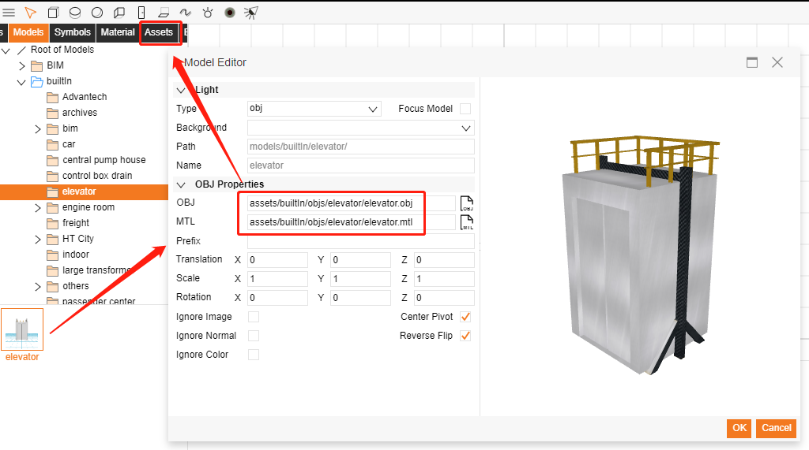
開啟模型，依照模型路徑至assets目錄下將檔案匯出即可進行修改。
修改完成之後，請重新建立新的Model。
對應的貼皮圖檔紀錄在mtl檔中，需先下載後再找對應的檔案。
3D FBX 模型動態置換材質。
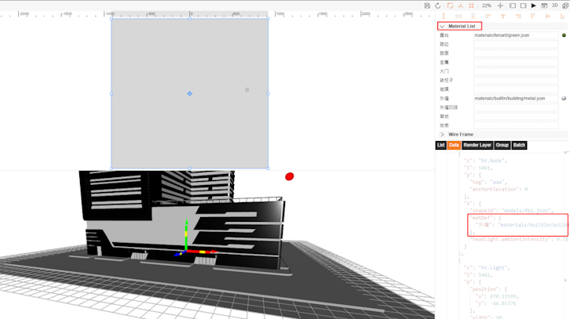
一般方式如果要置換模型材質需要動態產生模型，給予材質，並在場景上取代舊模型
比較簡易的方式是針對 Node 進行屬性替換，針對 matDef 屬性修改。
matDef 中的 key 值為 fbx 內部定義。
dataModel.getDataByTag('aaa').s(
'matDef',
{
外墙: "materials/builtIn/building/brickPillar.json"
}
)
3D 看板文字解析度
默認讀取的是設備的 dpi , 不同設備 dpi 不同，
dpi 設置的比較低清晰度會較低。
可以使用 g3d.setDevicePixelRatio() 主動設置 dpi。
設置較大的貼圖縮放比例，也可提高清晰度。
g3d.setDevicePixelRatio()
3D 看板不同系統文字長度問題
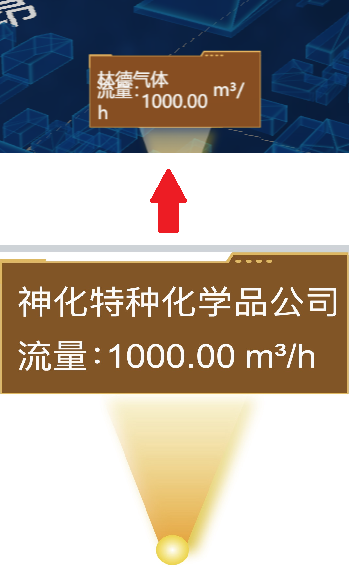
應該是不同系統電腦缺少了字體，導致獲取文本的長度不同，進行了換行。
可以適當調大寬度，或者取消自動換行。
3D 點擊平面物件添加標示
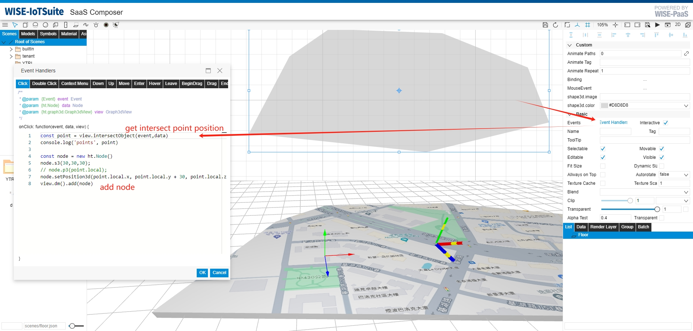
在平面上貼上道路貼皮
點選物件上道路的點，在該位置添加標示。
const point = view.intersectObject(event,data)
const node = new ht.Node()
node.s3(30,30,30);
node.setPosition3d(point.local.x, point.local.y + 30, point.local.z)
view.dm().add(node)
3D 點擊物件高亮(highlight)
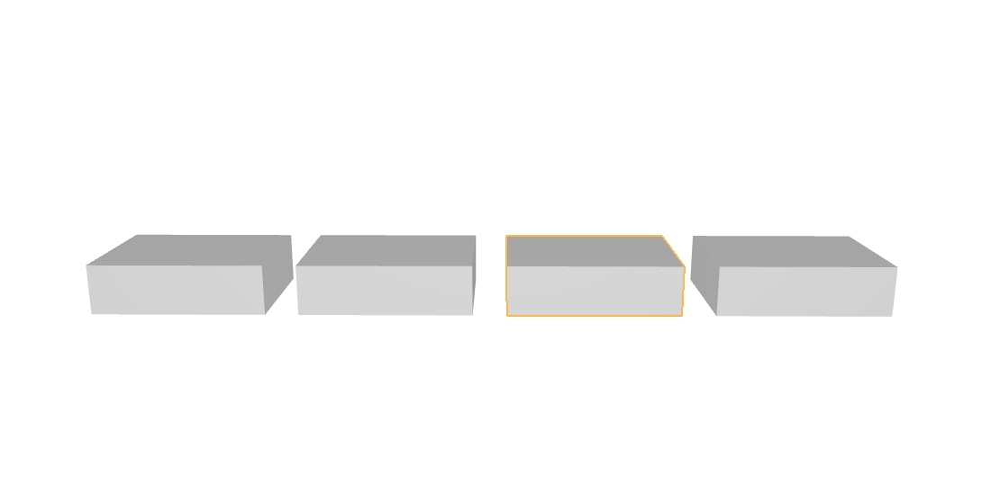
以通过node上的style属性highlight.mode单独控制高亮的模式
setHighlightMode: 设置当前高亮的模式，包括：disabled关闭高亮，selected选中高亮，hover悬浮高亮，style风格设置高亮
getHighlightMode: 获取当前高亮的模式，默认为style
setHighlightColor: 设置当前高亮的颜色
getHighlightColor: 获取当前高亮的颜色，默认为rgba(190, 210, 250, 1)
setHighlightWidth: 设置当前高亮的线宽
getHighlightWidth: 获取当前高亮的线宽，默认为0.8
g3d.setHighlightMode('mouseover');
g3d.setHighlightColor('#FEB64D');
g3d.setHighlightWidth(3);
或是參考 hightopo 物体高亮效果
3D 選中物件變暗
節點選中變暗是因為選中亮度默認是 0.7，調整為 1 即可
不變暗，node.s("select.brightness", 1)
node.s("select.brightness", 1)
或是參考 hightopo 風格
3D 中的2D圖標，添加tooltip
先在 3D 開啟場景添加
g3d.setToolTipEnabled(false)
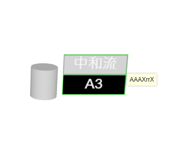
在2D圖標的事件中添加
ht.Default.showToolTip(event, 'AAAXrrX');
ht.Default.hideToolTip()
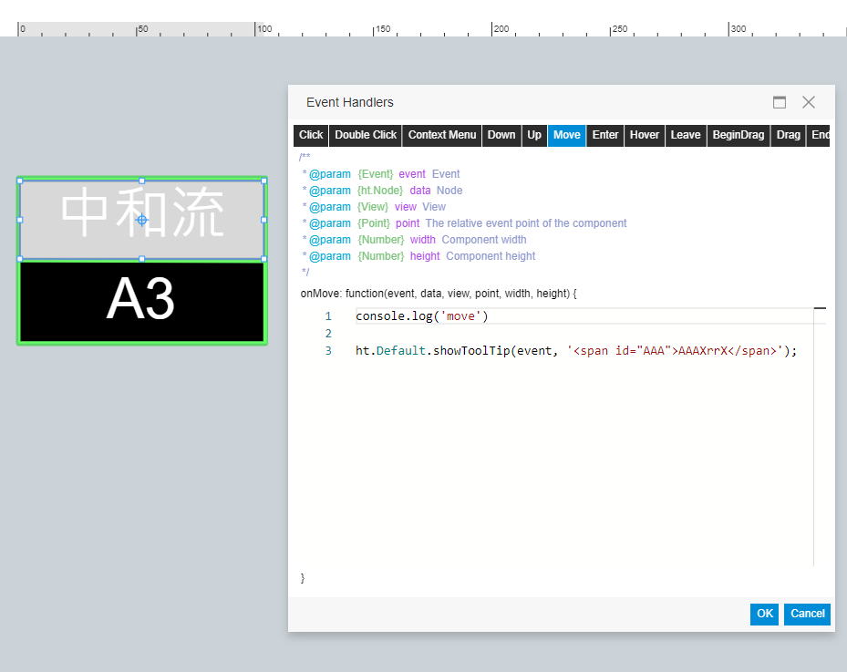
Overlay
取得各層 graphview 或 dataModel
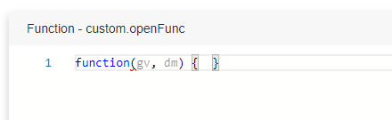 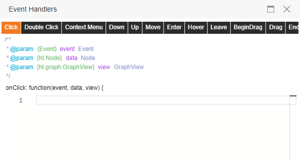
可以透過每個事件function中傳入的gv,view,dm等參數取得。
graph2d = gv;
之後可以從全域變數中提取，此方法可以避免因檔案複製路徑檔名不同而需要修改的問題。
其次，可透過全域變數 "commonViewUtil.currentFiles" 取得當前所有開啟的圖紙場景物件，
包含 graphView 與 dataModel ，使用此方式需要知道要操控的是哪個疊加層檔案名稱。
取得各層 graphview 或 dataModel
在要顯示 tooltip 的物件上添加 (move) 互動事件
ht.Default.showToolTip(event, data.getToolTip())
在畫面額外特定 div 開啟圖紙
在圖紙中添加，DIV圖標`builtIn/html/div.json`
在 main content中加入下列 DIV 元素
設定DIV大小
<div id="small" style="position:relative;width:100%;height:100%;min-height:100px;background:#F00;"></div>
添加一個按鈕，並設定`click`事件(代碼如下)
var obj = {
fileName: 'displays/dom1.json',
gvType: 'displays'
}
if(typeof commonViewUtil != 'undefined'){
var exist = false;
for(var i=0;i < commonViewUtil.currentFiles.length;i++){
if(commonViewUtil.currentFiles[i]['fileName'] == obj['fileName']){
commonViewUtil.currentFiles[i]['graphView'].addToDOM(document.getElementById('small'));
exist = true;
}
}
if(!exist){
commonViewUtil.appendDisplayToDOM(obj,{'parentViewId':'small'})
}
}
需要注意下方幾點:
- 確認 `commonViewUtil` 是否存在，只有在擁有疊加層的頁面具有此API
- 確認圖紙是否曾經被加載到畫面過，如果有則使用原有的 graphView
- 如果圖紙是第一次被添加到畫面則使用`commonViewUtil.appendDisplayToDOM`，並設定`parentViewId`
使用疊加層時，編寫 script使用 graphView & dataModel方式
在 commonViewUtil.currentFiles 中，保存所有疊加層的圖紙資訊
依照 'fileName' 可以從 commonViewUtil.currentFiles 找到想要的圖紙
如果只有一層2D疊在3D畫面上，則
commonViewUtil.currentFiles[0] 是 3D場景
commonViewUtil.currentFiles[1] 是 2D疊加層
commonViewUtil.currentFiles[0]['fileName'] 圖紙的檔案名稱
commonViewUtil.currentFiles[0]['graphView'] 圖紙的graphView
commonViewUtil.currentFiles[0]['dataModel'] 圖紙的dataModel
commonViewUtil.currentFiles[0]['isLayer'] 判斷是否為圖層
全域的
graphView = commonViewUtil.currentFiles[0]['graphView']
dataModel = commonViewUtil.currentFiles[0]['dataModel']
獲取graphView & dataModel 建議判斷`commonViewUtil.currentFiles`，如果不存在則直接使用全域的 graphView & dataModel
if(commonViewUtil && commonViewUtil.currentFiles){
commonViewUtil.currentFiles[0]['graphView']
commonViewUtil.currentFiles[0]['dataModel']
} else {
graphView
dataModel
}
Data surce plugin
sourceFormPane 使用一般 html 設計
例如添加連結 a
var href = document.createElement('a');
href.setAttribute('href', 'http://www.******.com');
href.innerHTML = 'http://www.*****.com';
href.style.font = sourceFormPane.getLabelFont();
href.style.lineHeight = sourceFormPane.getRowHeight() + 'px';
href.style.textAlign = 'right';
sourceFormPane.addRow([href], [0.1]);
dataBindingUI ，使用 input & datalist 做測點下拉篩選功能
var div = document.createElement('div');
div.id = 'divID';
var input = document.createElement('input');
input.type = 'text';
input.style.font = sourceFormPane.getLabelFont();
input.style.height = sourceFormPane.getRowHeight() + 'px';
input.style.lineHeight = sourceFormPane.getRowHeight() + 'px';
input.id = 'testInput';
input.setAttribute('list', 'tags');
input.addEventListener('input', (e) => {
const userInput = e.target.value;
console.log(userInput)
const tagsDatalist = document.getElementById('tags');
const options = tagsDatalist.querySelectorAll('option');
options.forEach(option => {
if (option.value.indexOf(userInput) === -1) {
option.style.display = 'none';
} else {
option.style.display = 'block';
}
});
});
const tags = [
'dv_tag_01',
'adam_tag_01',
'iot_tag_01',
'wise_tag_01'
];
var datalist = document.createElement('datalist');
datalist.id = 'tags';
tags.forEach(city => {
const option = document.createElement('option');
option.value = city;
datalist.appendChild(option);
});
div.appendChild(input);
div.appendChild(datalist);
sourceFormPane.addRow([{
element: ''
}, {element: div, id: 'divID'}], [55, 0.1]);
applyDataBindingUI 時需要將對應的值讀取返回到 target 物件下存取。
var targets = [];
target.tags = document.getElementById('testInput').value;
targets.push(target);
return targets;
APM 網路傳輸有資料畫面沒有
SaaS Composer的APM數據源中，默認要求數據要在五分鐘之內，
如果超出五分鐘了就會被認為是無效數據而丟棄處理。
數據時間落後與實際時間有6、7分鐘以上了，數據會被當作無效數據。
可以可以從兩個方面處理此問題
1. 確認網關時間是否落後與實際時間，如果有落後同步一下實際時間就可以，
還有就是邊緣端上傳數據的時間要在五分鐘之內，
超出五分鐘的話後面時間就會被認為是無效數據了
2. 加大數據源五分鐘有效範圍，在SaaS Composer中點擊時間屬性，
根據實際情況設定大一些的範圍，也可解決此問題（如下圖）
設定取樣時間及取樣點
const timeObj = {
"time": {
"from": "now-5m",
"to": "now"
},
"maxDataPoints": 120
}
dataRefreshUtil.timeRange.setTimeRangeToMap(timeObj)
SaaS Composer的APM數據源中，默認要求數據要在五分鐘之內，
如果超出五分鐘了就會被認為是無效數據而丟棄處理。
數據時間落後與實際時間有6、7分鐘以上了，數據會被當作無效數據。
可以可以從兩個方面處理此問題
1. 確認網關時間是否落後與實際時間，如果有落後同步一下實際時間就可以，
還有就是邊緣端上傳數據的時間要在五分鐘之內，
超出五分鐘的話後面時間就會被認為是無效數據了
2. 加大數據源五分鐘有效範圍，在SaaS Composer中點擊時間屬性，
根據實際情況設定大一些的範圍，也可解決此問題（如下圖）